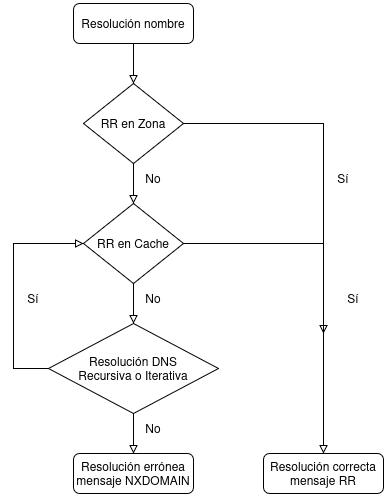
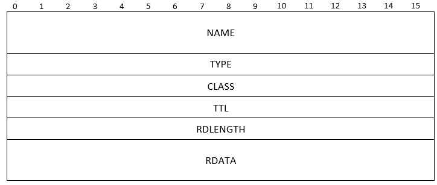

DNS PROTOCOLO
INTRODUCCIÓN
En una red TCP/IP, los nodos se identifican mediante una dirección IP. Recordar números IP en una red pequeña puede ser una tarea sencilla, sin embargo, la tarea se complica cuando el número de nodos crece. Por lo tanto, es necesario implementar un mecanismo en "lenguaje humano" que permita al usuario identificar de una manera más natural los nodos, este mecanismo consiste en utilizar un nombre para identificar al nodo. Para el ser humano:
- Resulta mucho más fácil recordar un nombre que una dirección IP.
- El nombre es un mecanismo más fiable, ya que la dirección IP puede cambiar.
SISTEMA DE NOMBRES PLANO
El sistema de nombres plano es un sistema de asignación de nombres en el que cada nombre es único y no existe ninguna jerarquía entre los nombres. Cada nombre se asocia directamente con una dirección IP.
El problema de este sistema es que no escala bien en redes grandes, ya que es necesario mantener una tabla con todos los nombres y sus correspondientes direcciones IP. Además, la administración de los nombres es complicada, ya que es necesario asignar los nombres de forma manual y evitar conflictos entre ellos.
El fichero de hosts es un ejemplo de sistema de nombres plano. En el fichero de hosts se realiza la asociación entre nombres y direcciones IP de forma manual y además permite definir aliases para los nombres. Se puede encontrar en la dirección /etc/hosts en sistemas Unix/Linux y en la dirección C:\Windows\System32\drivers\etc\hosts en sistemas Windows.
Fichero hosts
El siguiente es un ejemplo de fichero hosts en un sistema Unix/Linux:
[root@pc~]# cat /etc/hosts
127.0.0.1 localhost
::1 localhost
192.168.1.1 router
192.168.1.31 server escritorio padre
192.168.1.32 pc01 dormitorio madre
192.168.1.33 pc02 niño juegos
DOMAIN NAME SYSTEM
DEFINICIÓN
En 1983, debido al crecimiento de Internet, el sistema de nombres plano resultaba insuficiente para gestionar la gran cantidad de nodos que se conectaban a la red. Por este motivo, se diseñó un sistema de nombres jerárquico y distribuido denominado Domain Name System (DNS). DNS es un sistema de nombres jerárquico y distribuido que permite la resolución de nombres de dominio en direcciones IP y viceversa.
El protocolo DNS sigue el modelo cliente-servidor, donde los nodos clientes realizan consultas a los servidores DNS para resolver nombres de dominio.

DNS Server
Software que mantiene una base de datos de nombres y responde a las consultas de los clientes y de otros servidores DNS. A las máquinas que tienen instalado este software se les llama name server. Los servidores DNS tienen memorias caché para almacenar las consultas más habituales y mejorar el tiempo de respuesta.
Algunos servidores DNS son: BIND, DNSMasq, NSD, Microsoft DNS, Power DNS, Simple DNS plus, Knot DNS, Mara DNS,...
Resolver
Software en la máquina cliente que realiza consultas a un servidor DNS.
El resolver puede ser una librería que utilizan las aplicaciones para realizar las consultas DNS o un programa independiente que realiza las consultas en nombre de las aplicaciones. Algunos ejemplos de resolvers son: nslookup, dig, host, gethostbyname(), getaddrinfo(),...
Como los servidores DNS pueden hacerse consultas entre sí, muchas veces se implementa como un servidor DNS. En los sistemas operativos se trata de un servicio en ejecución que responde a las consultas de los otros programas.

DNS está definido a las RFC 1034, 1035, 1886 (IPv6) y utiliza los siguientes puertos:
- UDP 53 para consultas y respuestas DNS.
- TCP 53 para transferencias de zonas y respuestas DNS grandes (> 512 bytes).
- Para los clientes se utilizan puertos efímeros.
CARACTERÍSTICAS DE LA ESTRUCTURA DNS
DNS se fundamenta en una base de datos distribuida que organiza un espacio jerárquico de nombres de dominio con las siguientes características:
- Estructura jerárquica. El sistema se organiza en forma de árbol que comienza con un dominio raíz, el cual se subdivide en subdominios. Estos subdominios pueden dividirse nuevamente en otros subdominios, permitiendo hasta 127 niveles de profundidad en la jerarquía.

- Distribución descentralizada. La información que define esta estructura arbórea no se almacena en un único repositorio central. En su lugar, se distribuye entre múltiples servidores DNS repartidos geográficamente, lo que permite que cada servidor gestione una parte específica del espacio de nombres.

- Nombres de dominio. Cada nodo del árbol recibe un nombre de dominio con reglas específicas: máximo 63 caracteres, sin distinción entre mayúsculas y minúsculas, y sin repeticiones entre nodos del mismo nivel (hermanos). Los nombres se separan mediante puntos (.) para construir rutas. El nombre completo desde cualquier nodo hoja puede alcanzar un máximo de 255 caracteres.
- Raíz del dominio. El nodo raíz del árbol se identifica con una cadena vacía que representa el punto más alto de la jerarquía.
- Nombres absolutos (FQDN). Un nombre de dominio completamente cualificado (Full Qualified Domain Name) especifica la ruta completa desde un nodo hasta la raíz, terminando siempre con un punto. Este nombre es único en todo el espacio de nombres. Ejemplos:
www.gva.edu.,www.gva.net.,gva.edu. - Nombres relativos. Son nombres de nodos que no incluyen la ruta completa hasta la raíz. Normalmente requieren procesamiento por software para completarse y convertirse en nombres absolutos. Ejemplos:
ftp,gva.edu.
- Dominios y subdominios. Un dominio es un nombre asignado a un nodo que abarca tanto ese nodo como todo el subárbol que cuelga de él. Por ejemplo,
edues un dominio que contiene el subdominiogva;netes un dominio que contiene los subdominiosgvayua; yuaes a su vez un subdominio denetque define máquinas específicas comoenps3yenps4. - Delegación de dominios. Este mecanismo permite descentralizar la administración del sistema DNS mediante la división de dominios en subdominios. Cada subdominio puede ceder su control administrativo a una autoridad diferente (otro servidor DNS), quien asume la responsabilidad de mantener los registros de recursos de ese subdominio.
- Espacio de nombres. El espacio de nombres DNS comprende el dominio raíz y la totalidad de los subdominios que derivan de él, formando un conjunto completo de nombres únicos organizados jerárquicamente.
DOMINIO RAÍZ
Hay 13 servidores DNS raíz en toda Internet. Esto no quiere decir que haya 13 servidores físicos, cada operador utiliza equipos redundantes para ofrecer un servicio fiable. Además, en la actualidad se utiliza también el direccionamiento anycast para acceder a los servidores raíz. Los nombres de los servidores raíz son de la forma letra.root-servers.net.Sus nombres y direcciones actuales son:
| Letra | IPv4 | Ubicación |
|---|---|---|
| A | 198.41.0.4 | Distribuido, anycast |
| B | 192.228.79.201 | Marina del Rey – California - US |
| C | 192.33.4.12 | Distribuido, anycast |
| D | 199.7.91.13 | College park – Maryland - US |
| E | 192.203.230.10 | Mountain View – California - US |
| F | 192.5.5.241 | Distribuido, anycast |
| G | 192.112.36.4 | Distribuido, Anycast |
| H | 198.63.2.53 | Distribuido – Maryland - US |
| I | 192.36.148.17 | Distribuido, Anycast |
| J | 192.58.128.30 | Distribuido, Anycast |
| K | 193.0.14.129 | Distribuido, anycast |
| L | 199.7.83.42 | Distribuido, Anycast |
| M | 202.12.27.33 | Distribuido, Anycast |
Podéis consultar la lista actualizada de servidores raíz en el siguiente enllaç root-servers.
Cada uno de estos servidores guardan una copia de la zona de definición de los dominios de primer nivel o TLD (Top Level Domain). Esta zona TLD es definida por la ICANN pero es controlada por el Departamento de Comercio de los Estados Unidos.
La ICANN distingue actualmente los siguientes grupos para los TLD:
- ccTLD (country code TLD) (dos caracteres). Identifican los países. Algunos ejemplos son: es, fr, dk, de, jp, it.
- gTLD (genérico TLD) (tres o más caracteres).
- sTLD sponsored TLD (Ejemplos: edu, gov, jobs, museum, cat, ...).
- uTLD unsponsored TLD (Ejemplos: hoteles).
- .arpa utilizado por la ICANN para su propia infraestructura.
Se puede consultar la definición de la lista de servidores raíz y de la zona raíz en los siguientes enlaces:
Lista de servidores raíz (root hints zone)
TLD definidos en los servidores raíz (root zone)
BASE DE DATOS
ZONA
Cada servidor DNS mantiene en su base de datos la información de una parte del espacio de nombres llamada zona. Una zona puede coincidir con un dominio pero no es necesario. Los servidores que gestionan la zona tienen información completa sobre ella y se dice que tienen autoridad respecto a ella. Un servidor DNS puede definir una o más zonas, además una zona puede ser gestionada por más de un servidor DNS.
Un servidor DNS puede delegar la administración de una parte de su zona a otros servidores DNS. En este caso, pierde la autoridad sobre la zona delegada pero puede recuperar la información a partir de los DNS delegados.
En la siguiente imagen se muestra un espacio de nombres con cuatro zonas y catorce dominios:

En la especificación de la base de datos en el servidor DNS habrá al menos los siguientes archivos de zona:
- Zona de resolución directa. Esta zona mantiene las asociaciones de los nombres de dominio a direcciones IP.
- Zona de resolución inversa. Esta zona mantiene las asociaciones de cada dirección IP con su nombre de dominio canónico.
- Zona de resolución inversa de la dirección de loopback. Esta zona mantiene la traducción inversa de las direcciones de loopback.
- Zona root. Esta zona mantiene las direcciones de los nodos DNS raíz.
La forma en que un servidor define sus zonas en la base de datos varía de un tipo de servidor a otro.
Las mayoría de las distribuciones Linux incorporan BIND9 como servidor DNS. La configuración del servicio (named) y las zonas se hacen en el archivo /etc/bind/named.conf. Normalmente no se modifica el archivo para introducir las nuevas zonas y opciones. Para ello se utilizan los archivos que hay bajo la directiva include:
- named.conf.options: Opciones globales de configuración.
- named.conf.local: zonas nuevas definidas.
El archivo named.conf tiene la siguiente estructura:
// Archivo de configuración principal de BIND9
include "/etc/bind/named.conf.options";
include "/etc/bind/named.conf.local";
# Be authoritative for the localhost forward and
# broadcast zones as per RFC 1912.
zone "." {
type hint;
//Tipo servidor definido para zona cache
file "/etc/bind/db.root";
};
zone "localhost." {
type master;
file "/etc/bind/db.local";
};
zone "127.in-addr.arpa." {
type master;
};
file "/etc/bind/db.127";
zone "0.in-addr.arpa." {
type master;
};
file "/etc/bind/db.0";
zone "255.in-addr.arpa." {
type master;
file "/etc/bind/db.255";
};
include "/etc/bind/named.conf.default-zones";
Las zonas que aparecen en el archivo son las zonas por defecto que tiene BIND9. En las versiones más recientes de BIND9 las zonas por defecto se definen en el archivo named.conf.default-zones. En ese caso el archivo named.conf queda así:
// Archivo de configuración principal de BIND9
include "/etc/bind/named.conf.options";
include "/etc/bind/named.conf.default-zones";
include "/etc/bind/named.conf.local";
En BIND9 se pueden definir zonas de diversos tipos:
- Master: Es una zona autoritativa. Es decir, en esta zona se definen los registros que asocian nombres e IP y a la inversa.
- Slave: Se trata de una copia completa de una zona autoritativa.
- Stub: Se trata de una copia parcial de una zona autoritativa.
- Forward: Se trata de una zona en la que no hay definición, sino que las consultas se reenvían a otros servidores.
- Hint: Se trata de la zona donde están definidos los servidores raíz.
A las zonas master y slave se las llamaba antes primaria y secundaria respectivamente.
Además, se pueden utilizar diferentes opciones globales para modificar el comportamiento del servidor, por ejemplo:
- Listen-on. Especifica la IP donde el servicio escucha las peticiones.
- Forwarders. Especifica la IP de los servidores DNS a los que se hará un reenvío si no se consigue resolver localmente la consulta.
- acl. Especifica una lista de IPs para cumplir una condición.
Para definir una zona se utiliza la siguiente estructura, aunque puede tener más opciones:
zone "<dominio FQDN>" {
type (master,slave,stub,forward,hint);
file "archivo-definición-registros";
};
Configuración de zonas en BIND9
En el siguiente ejemplo se muestran las definiciones de las zonas master y slave para un dominio ies.com y su correspondiente zona inversa para la red.

La configuración de las zonas se haría en el archivo /etc/bind/named.conf.local. Para el nodo de dirección IP 192.168.0.200 (DNS master) la definición de las zonas directa e inversa sería:
zone "ies.com" {
type master;
file "/etc/bind/ies.com.db";
allow-transfer {192.168.0.201;};
};
zone "0.168.192.in-addr.arpa"{
type master;
file "/etc/bind/0.168.192.db";
allow-transfer {192.168.0.201;};
};
Y para el nodo de dirección IP 192.168.0.201 (DNS slave) la definición de las zonas serían:
zone "ies.com" {
type slave;
file "/etc/bind/ies.com.db";
masters {192.168.0.200;};
}
zone "0.168.192.in-addr.arpa"{
type slave;
file "/etc/bind/0.168.192.db";
masters {192.168.0.200;};
};
El reenvío (forwarding) se tiene que hacer en los dos servidores en las opciones globales:
forwarders {
190.20.2.1;
};
En este caso, no se ha utilizado una zona tipo forward ya que lo que se quiere es que cualquier consulta que no pueda resolver con autoridad el servidor se reenvíe al servidor DNS del ISP.
REGISTROS DE RECURSOS (RR)
La base de datos que define una zona se basa en diferentes tipos de registros de recursos (RR). Para su definición se utiliza el siguiente formato:
<propietario> <clase> [ttl] <tipo> rdata
donde el significado de cada campo es:
Propietario: Nombre del dominio que se está definiendo.
Clase: IN – Internet.
TTL: Opcional. Indica el tiempo de vida de este registro en caché. Se puede expresar en días (d), horas (h), minutos (m) o segundos (s). Si contiene un 0 indica que no se tiene que almacenar en caché. Ejemplos: 4h40m, 2300 (no indica nada, por tanto segundos).
TIPO: Tipo de registro.
RDATA: Valor asociado al registro.
TIPOS DE REGISTROS DE RECURSOS
Los tipos de registros más importantes son:
-
SOA (Start Of Authority): Identifica al servidor como autoritario de una zona y permite definir sus parámetros de configuración.
-
NS (Name Server): Identifica los servidores de nombres autorizados para la zona.
-
A (Address): Asocia un nombre FQDN a una dirección IPv4.
-
AAAA (Address IPv6): Asocia un nombre FQDN a una dirección IPv6.
-
PTR (Pointer): Asocia una dirección IP a un nombre FQDN (resolución inversa).
-
MX (Mail Exchanger): Indica los servidores de correo definidos en la zona.
-
CNAME (Canonical Name): Permite asignar un alias a un nombre canónico.
-
TXT (Text): Registro para almacenar cualquier información.
-
SRV (Service): Ubicación de los servidores para un servicio.
DIRECTIVAS EN ARCHIVOS DE DEFINICIÓN DE REGISTROS
En los archivos de definición de registros de la zona se pueden usar las siguientes directivas:
-
$ORIGIN: Define el nombre base a partir del cual se forman los nombres FQDN para los nombres relativos. Si no está, entonces se hace
$ORIGIN=nombrede la zona. -
$TTL: Define el tiempo por defecto para guardar un registro en la caché, si no se ha especificado en el propio registro. Si no se indica, su valor por defecto es de 1 hora.
ABREVIACIONES EN EL ESTÁNDAR DNS
El estándar DNS permite hacer abreviaciones en los archivos de definición de zona para facilitar la sintaxis:
-
@: Para utilizar el valor de
$ORIGIN. -
Espacio en blanco: Para indicar que se repite el valor del registro anterior.
-
Nombres de dominio relativos: A los nombres de dominio relativos (no acabados en punto) se les añade automáticamente
$ORIGINpara formar un nombre FQDN.
REGISTRO SOA (Start Of Authority)
El registro de recurso SOA o start of authority dice que el archivo de zona donde se encuentra es la mejor fuente de datos para la zona, y que el servidor de nombres es autoritario para la zona. Acostumbra a ser el primer RR que hay en el archivo de zona, aunque no es obligatorio. Por cada archivo de zona tiene que haber solo un registro SOA.
Un registro SOA tiene el siguiente formato:
NAME. IN SOA MNAME. RNAME. (OPCIONES-SLAVES)
donde el significado de cada campo es:
-
NAME: Nombre de dominio de la zona.
-
IN: Clase del registro (Internet).
-
SOA: Tipo de registro (Start Of Authority).
-
MNAME: Nombre FQDN del servidor DNS master de la zona.
-
RNAME: Dirección de correo electrónico del administrador de la zona. El carácter "@" se sustituye por un punto ".". Por ejemplo, admin.ies.com.
-
OPCIONES-SLAVES: Parámetros para definir la comunicación entre las zonas master y slave. Dichas opciones son:
- SERIAL: Número de serie de la versión de los datos. Las zonas slaves actualizarán sus registros cuando su número serial sea menor al de la zona master.
- REFRESH: Indica cada cuánto tiempo la zona slave debe consultar la zona master para comprobar los cambios.
- RETRY: Indica el tiempo de espera para volver a hacer un "refresh" después de haber fallado.
- EXPIRE: Indica el tiempo de caducidad de la zona slave. Si no se ha refrescado antes, la zona slave se considera sin autoridad.
- NXDOMAIN TTL: Tiempo de validez en la caché del mensaje NXDOMAIN. Este mensaje se recibe cuando no se ha podido resolver una consulta.
El tiempo se puede expresar en semanas (W), días (D), horas (H), minutos (M) o segundos (S). Si no se especifica, el tiempo se expresa en segundos.
Registro SOA
El siguiente es un ejemplo de registro SOA para la zona ies.com:
@ IN SOA ns1.ies.com. admin.ies.com. (
2024041501 ; Serial
3600 ; Refresh 1H
900 ; Retry 15M
604800 ; Expire 1W
86400 ; NXDOMAIN TTL 1D
)
REGISTRO NS (Name Server)
El registro de recurso NS o name server define un servidor de nombres autoritativo para la zona. Habrá tantas entradas NS como servidores de nombres autoritativos haya en la zona. El estándar DNS recomienda al menos dos (uno primario o master y uno de seguridad secundario o slave).
Un registro NS tiene el siguiente formato:
NAME. IN NS MNAME.
donde el significado de cada campo es:
- NAME: Nombre FQDN de dominio de la zona.
- IN: Clase del registro (Internet).
- NS: Tipo de registro (Name Server).
- MNAME: Nombre FQDN del servidor DNS autoritativo para la zona.
Registro NS
El siguiente es un ejemplo de registro NS para la zona ies.com:
ies.com. IN NS nsmaster.ies.com.
ies.com. IN NS nsslave.ies.com.
REGISTRO A (Address)
Un registro de recurso A o address asocia un nombre de host a una dirección IP (resolución directa). Un host puede tener más de una IP asociada a su nombre (multi-homed). Los nombres definidos en los registros de tipo A son nombres canónicos (originales). Los alias se definen con el tipo de registro CNAME.
Un registro A tiene el siguiente formato:
NAME. IN A IP
donde el significado de cada campo es:
- NAME: Nombre FQDN del host.
- IN: Clase del registro (Internet).
- A: Tipo de registro (Address).
- IP: Dirección IPv4 asociada al nombre del host.
Registro A
El siguiente es un ejemplo de registro A para diferentes hosts del dominio ies.com:
nsmaster.ies.com. IN A 192.168.0.200
nsslave.ies.com. IN A 192.168.0.201
pc1.ies.com. IN A 192.168.0.1
pc1.ies.com. IN A 192.168.0.10
pc2.ies.com. IN A 192.168.0.2
REGISTRO CNAME (Canonical Name)
Los registros de recurso CNAME o canonical name asocian un alias a un nombre canónico. Un registro CNAME consta de los campos:
NAME. IN CNAME CANONICALNAME | IP
donde el significado de cada campo es:
- NAME: Nombre FQDN del alias.
- IN: Clase del registro (Internet).
- CNAME: Tipo de registro (Canonical Name).
- CANONICALNAME: Nombre canónico (definido en un registro A) asociado al alias.
- IP: En vez de un nombre canónico se puede utilizar la IP del registro A, eso sirve para diferenciar aquellos registros A de tipo multi-homed.
Registro CNAME
El siguiente es un ejemplo de registro CNAME para diferentes alias del dominio ies.com:
nsprimary.ies.com. IN CNAME nsmaster.ies.com.
nssecondary.ies.com. IN CNAME nsslave.ies.com.
contable.ies.com. IN CNAME 192.168.0.1 ;alias para IP en un registro A multi-homed
REGISTRO PTR (Pointer)
Un registro de recurso PTR o pointer asocia una dirección IP al nombre de host pertinente (resolución inversa). Es necesaria una entrada PTR para cada interfaz de red de la zona.
Para el formato de registro PTR, la IP se escribe de forma inversa. Por ejemplo, la IP 192.168.0.1 se expresa como 1.0.168.192, seguida por .IN-ADDR.ARPA. que identifica la IP como inversa.
El formato del registro PTR es:
IPINVERSA.IN-ADDR.ARPA. IN PTR CANONICALNAME.
donde el significado de cada campo es:
- IPINVERSA.IN-ADDR.ARPA.: Dirección IP escrita de forma inversa seguida de .IN-ADDR.ARPA.
- IN: Clase del registro (Internet).
- PTR: Tipo de registro (Pointer).
- CANONICALNAME.: Nombre FQDN canónico asociado a la IP
Registro PTR
El siguiente es un ejemplo de registro PTR para diferentes hosts del dominio ies.com:
200.0.168.192.IN-ADDR.ARPA. IN PTR nsmaster.ies.com.
201.0.168.192.IN-ADDR.ARPA. IN PTR nsslave.ies.com.
1.0.168.192.IN-ADDR.ARPA. IN PTR pc1.ies.com.
10.0.168.192.IN-ADDR.ARPA. IN PTR pc1.ies.com.
2.0.168.192.IN-ADDR.ARPA. IN PTR pc2.ies.com.
REGISTRO MX (Mail Exchanger)
Un registro MX o mail exchanger define un servidor de correo. El software del servidor de correo (MTA) consulta los registros MX para identificar los servidores de correo de los destinatarios. El MTA establece una conexión SMTP con estos servidores de correo, según su prioridad.
El formato del registro MX es:
NAME. IN MX NUM MAILSERVER.
donde el significado de cada campo es:
- NAME: Nombre FQDN del dominio.
- IN: Clase del registro (Internet).
- MX: Tipo de registro (Mail Exchanger).
- NUM: Número de prioridad con respecto a otros servidores MX definidos. El menor valor es el más prioritario.
- MAILSERVER: Nombre FQDN del servidor de correo.
Registro MX
El siguiente es un ejemplo de registro MX para el dominio ies.com:
ies.com. IN MX 10 mail.ies.com.
ies.com. IN MX 20 mail2.ies.com.
mail.ies.com. IN A 192.168.0.220
mail2.ies.com. IN A 192.168.0.221
REGISTRO SRV (Service)
Un registro SRV o servicio especifica los servidores disponibles para realizar un servicio o protocolo determinado. El formato del registro SRV es:
SERVICIO.PROTOCOL.NAME. IN SRV PRIORIDAD PESO PUERTO CANONICALNAME
donde el significado de cada campo es:
- SERVICIO: Nombre del servicio (por ejemplo, ftp, http, ssh,...).
- PROTOCOL: Protocolo utilizado (tcp o udp).
- NAME: Nombre FQDN del dominio.
- IN: Clase del registro (Internet).
- SRV: Tipo de registro (Service).
- PRIORIDAD: Orden en el que los clientes se pondrán en contacto (mayor prioridad, el número más bajo).
- PESO: Mecanismo de balanceo de carga.
- PUERTO: Puerto de servicio.
- CANONICALNAME: Nombre canónico del servidor que proporciona el servicio.
Registro SRV
El siguiente es un ejemplo de registro SRV para los servicios de FTP y HTTP en el dominio ies.com:
ftp.tcp.ies.com. IN SRV 0 0 21 ftp.ies.com.
http.tcp.ies.com. IN SRV 0 0 80 http.ies.com.
ftp.ies.com. IN A 192.168.0.230
http.ies.com. IN A 192.168.0.225
TIPOS DE SERVIDORES
En función de cómo el servidor tiene configuradas sus zonas y opciones globales, existen los siguientes tipos de servidores:
- Master. Tiene definida una zona de tipo master sobre la que tiene autoridad (también llamado primario).
- Slave. Tiene definida una zona de tipo slave sobre la que tiene autoridad (también llamado secundario).
- Forwarder. Tiene definida alguna zona y para las consultas que no son de sus zonas reenvía las solicitudes a otros servidores y guarda las respuestas en su memoria caché.
- Forwarder caché. No tiene definida ninguna zona y solamente hace reenvíos a otros servidores y guarda las respuestas en su memoria caché.
Un servidor puede ser master para una zona, slave para otra zona y, al mismo tiempo, ser de tipo forwarder para el resto de peticiones.
CONSULTAS
Las consultas DNS para la resolución de nombres de dominio pueden ser de dos tipos: recursivas o iterativas.
El proceso de resolución de un nombre en un servidor DNS sigue los siguientes pasos:
- El servidor consulta sus zonas. Si encuentra un registro, la respuesta es autoritativa. Si no lo encuentra, va al paso 2.
- El servidor consulta su memoria caché. Si encuentra un registro, la respuesta es no autoritativa. Si no lo encuentra, va al paso 3.
- El servidor reenvía la consulta a otros servidores DNS de forma recursiva o iterativa. Si recibe una respuesta, la almacena en la caché y responde de forma no autoritativa. Si no recibe ninguna respuesta, devuelve un mensaje de error NXDOMAIN.
Esquema de resolución DNS:

CONSULTAS RECURSIVAS
En las consultas recursivas el servidor DNS debe devolver una respuesta (el RR que resuelve la consulta o un mensaje de error).
Si el servidor no tiene la respuesta en su zona o caché, consultará a otros servidores DNS.
Este tipo de consultas se suelen producir entre los clientes resolvers y los DNS locales (como el DNS de un ISP). También se utiliza entre un servidor DNS y sus servidores DNS forwarders.
CONSULTAS ITERATIVAS
En las consultas iterativas el servidor DNS proporciona la mejor respuesta que tiene, que puede ser la solución o una referencia a otro servidor DNS de nivel inferior. Si se recibe una referencia a un servidor se vuelve a hacer una consulta iterativa con este servidor.
Las consultas iterativas se suelen producir entre servidores DNS. Cuando un servidor no sabe resolver una consulta, inicia una consulta iterativa con los servidores DNS raíz, y así sucesivamente hasta encontrar la respuesta o agotar las posibilidades.
Ejemplo de resolución iterativa/recursiva:
Supongamos que un DNS cliente quiere resolver el nombre example.microsoft.com y envía una consulta recursiva a su DNS local. El proceso de resolución sería el siguiente:
- DNS cliente hace una consulta recursiva, para example.microsft.com, al DNS local.
- DNS local no encuentra la respuesta e inicia el proceso de iteración haciendo una consulta iterativa a un servidor DNS raíz.
- El servidor DNS raíz contesta con la mejor de sus respuestas, que es el dominio .com y una lista de servidores para este dominio. EL servidor DNS local guarda en caché la respuesta.
- DNS local hace una consulta iterativa a un servidor DNS de dominio .com.
- El servidor DNS de dominio .com contesta con microsoft.com y una lista de servidores para este dominio. EL servidor DNS local guarda en caché la respuesta.
- DNS local hace una consulta iterativa a un servidor DNS de dominio microsoft.com.
- El servidor DNS de dominio microsoft.com contesta con el registro de exemple.microsoft.com. El DNS local guarda en caché la respuesta y termina las iteraciones.
- El servidor DNS local responde al DNS cliente con el registro que resuelve la consulta exemple.microsoft.com.
FORMATO DE MENSAJES DNS
Los mensajes DNS se utilizan para las consultas de resolución de nombres y el intercambio de información entre los servidores DNS. Su formato es el siguiente:

A continuación se describen los diferentes campos del mensaje DNS:
-
HEADER: es la cabecera del mensaje. Se compone del ID, Flags y los campos que indican el número de registros en cada sección (QDCount, ANCount, NSCount, ARCount).

-
ID: 2 bytes. Número de identificación de la consulta.
-
Flags: 2 bytes. Indican toda la información sobre la consulta. Contiene los subcampos descritos en la siguiente tabla:
Flag Bit Descripción Valor QR 0 Tipo de mensaje 0-query, 1-response OPCODE 1-4 Tipo de consulta 000 – standard query
001 – inverse query
010 – server status query
El resto de combinaciones no se utilizanAA 5 Bit autoridad 0-non authoritative answer
1-authoritative answerTC 6 Bit truncamiento 0-message not truncated
1-Message truncatedRD 7 Bit recursividad 0-non recursive query
1-recursive queryRA 8 Bit recursividad al servidor 0-recursion not available
1-recursion availableZ 9-11 Bit reservado 0-reserved AD 10 Bit autenticaciones 0-authority section was not authenticated
1-authority section was authenticatedCD 11 Bit autenticación obligatoria 0-no authenticated data is acceptable for query
1-only authenticated data is acceptable for queryRCODE 12-15 Tipo respuesta 0000-no error
0100-format error in query
0010-server failure
0001-name does not exits -
QDCount: 2 bytes. Número de registros en la sección de preguntas.
-
ANCount: 2 bytes. Número de registros en la sección de respuestas.
-
NSCount: 2 bytes. Número de registros en la sección de autoridad.
-
ARCount: 2 bytes. Número de registros en la sección adicional.
-
-
QUESTION: Pregunta que se hace al servidor DNS. Tiene el siguiente formato:

Contiene:- QNAME: Nombre de dominio por el que se pregunta. Consta de n bytes.
- QTYPE: Tipo de registro, puede ser A, PTR, etc., o tipos especiales como AXFR (zona especial de transferencia) o * cualquier tipo. Consta de 2 bytes.
- QCLASS: Tipo de clase del registro, como IN, CH o * (cualquier clase). Consta de 2 bytes.
-
ANSWER: Registro o registros de respuesta.
-
AUTHORITY: Registro de los servidores que tienen autoridad sobre la respuesta.
-
ADDITIONAL: Registros adicionales que pueden ser útiles para la resolución de la consulta.
Cada registro en las secciones ANSWER, AUTHORITY y ADDITIONAL tiene el siguiente formato:

donde el significado de cada campo es:
Campo
Tamaño
Descripción
NAME
n bytes
Nombre del propietario del registro.
TYPE
2 bytes
Tipo de registro.
CLASS
2 bytes
Tipo de clase.
TTL
4 bytes
Tiempo de vida asignado al registro en segundos.
RDLENGTH
2 bytes
Número de bytes del campo RDATA.
RDATA
n bytes
Datos del registro.
EVOLUCIÓN
Los protocolos DNS han evolucionado gracias al incremento exponencial de las redes. Dos vías principales de evolución son el DDNS o dinámico DNS y el DNSSEC o DNS seguro.
DDNS El protocolo DDNS (dynamic DNS) permite que los datos del servidor DNS se actualicen en tiempo real. Su principal uso es permitir que clientes con direcciones IP dinámicas puedan disponer de un nombre de dominio a pesar de que su dirección IP varíe de una sesión a otra. Un mecanismo para lograr esto es permitir que los servidores DHCP se comuniquen con los servidores DNS y les notifiquen las actualizaciones necesarias en la base de datos de DNS.
DNSSEC El protocolo DNS data de la década de los 80, una época donde la funcionalidad estaba por encima de la seguridad. Las transferencias de zonas y las consultas se hacen en claro, sin cifrar. Las deficiencias de seguridad hacen al protocolo susceptible de falsificación de registros, con riesgos de redirección a sitios maliciosos y suplantación.
DNSSEC (Domain Name System Security Extensions) se diseñó para solucionar estos problemas, añadiendo una capa de seguridad adicional que permite comprobar la integridad y autenticidad de los datos. DNSSEC se basa en el uso de claves asimétricas. Cada servidor DNS tiene una clave pública (transmitida al resto de servidores) y una clave privada (solo conocida por el servidor). DNSSEC no cifra; solo se utiliza para comprobar la identidad correcta del servidor que ha generado el mensaje DNS (autenticidad) y comprobar que no ha sido modificado durante el trayecto hasta el cliente (integridad).